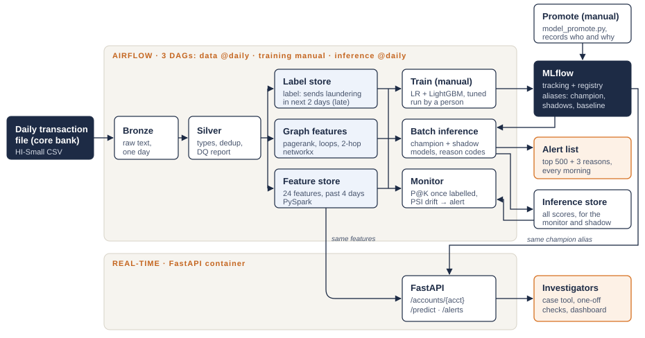
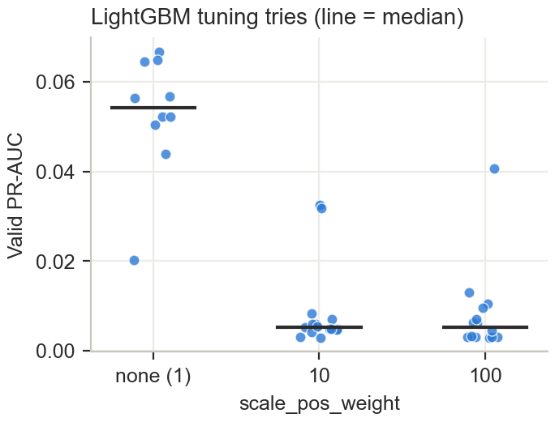
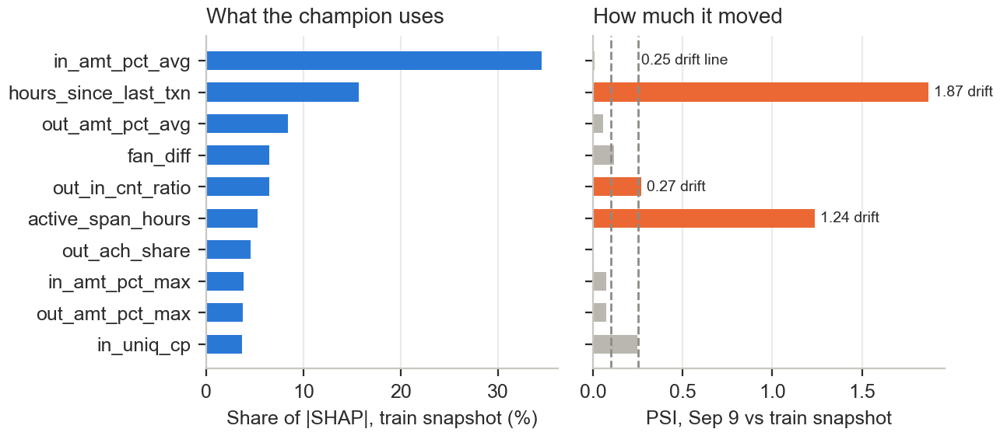
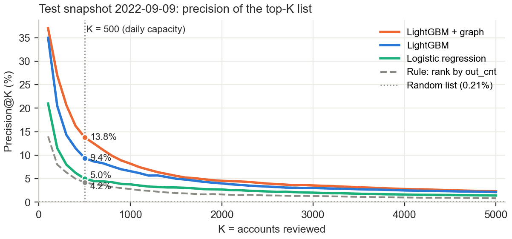
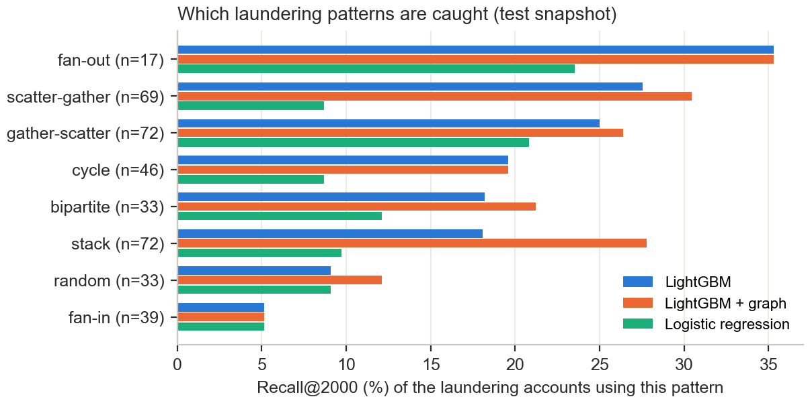

CS611 Machine Learning Engineering · Group 9 · Final Report
Zhou Jie, Ho Wee Loong, Joyce Teo Hua Sze, Abinav Shajil, Alekhya Kodavatiganti, Zachary Artemus Kondas
Code and README: github.com/Alekhya-koda/Anti-Money-Laundering (zip on eLearn). Run: docker compose up -d --build, then the README steps (data DAG, one training run, inference DAG).
Banks in Singapore must monitor customer transactions and report suspicious activity (MAS Notice 626). Most monitoring is still rule based. On our data the rule "flag any payment above 10,000" raises 1.37M alerts at 0.18% precision, barely better than picking at random. Investigators can only open a fixed number of cases a day, so what helps them is a short list ordered by risk, with the reason each account is on it. MAS's FEAT principles also expect AI-assisted decisions to be explainable and accountable.
We built a system that every morning ranks all active accounts by how likely they are to send a laundering payment in the next two days, and hands the top 500 to the investigators with three plain-English reasons each. The same model answers one-off questions through a real-time API.
Table 1. Users of the system
| User | Need | What they use |
|---|---|---|
| AML investigator (primary) | See the riskiest accounts first, check one account on demand | Morning alert list (CSV or GET /alerts), GET /accounts/{acct} |
| Compliance manager | Know if alerts are worth the time, plan workload | Daily precision and alert volume (model_performance.csv) |
| ML engineer | Keep the pipeline healthy, decide on retraining, approve and roll back models | Airflow UI, MLflow registry, drift reports, model_promote.py |
Success criteria. We rank accounts, not transactions, because investigators open cases per account. With 0.2% positives accuracy says nothing, so we report Precision@K and Recall@K for K = 500 (the daily review capacity we assume), 2,000 and 5,000, plus PR-AUC, and compare against simple rule rankings of the same accounts.
We use IBM's synthetic AML transactions (Altman et al., NeurIPS 2023), HI-Small variant: 5.08M transactions between about 515k accounts from Sep 1 to 18, 2022, in 15 currencies, with 0.10% of transactions labelled as laundering. The laundering comes from 370 simulated attempts of eight patterns (fan-in, fan-out, cycle, gather-scatter, scatter-gather, bipartite, stack, random). Real bank data is private and rarely labelled, which is why we use a simulator. The proposal named the HI-Large file (180M rows); we moved to HI-Small so the whole pipeline, including a 10-day replay, runs on one laptop. The schema is the same, so the Spark jobs would run unchanged on HI-Large on a cluster.
EDA findings that shaped the design:
Assumptions. (1) The core banking system delivers one transaction file per day and scoring runs after midnight. (2) The label of an account is whether it sends at least one laundering payment in the next two days. It stands in for an investigation outcome and, like one, arrives late: the label of the snapshot taken on day D is known only after day D+1. (3) Investigators review 500 accounts a day. (4) Account IDs are unique across banks.

Figure 1. Architecture. The three DAGs exchange data only through the stores and MLflow. Batch and real-time inference share the feature store and the champion alias.
Everything starts with docker compose up (Table 2): Airflow 2.6 (our image extends the lab 5 image with Java 17, PySpark 3.5 and LightGBM), an MLflow 2.17 server with a SQLite backend and an artifact store on a volume, and a separate, small FastAPI container. Data sits in a parquet datamart with bronze, silver and gold layers. Each piece has a managed AWS equivalent; we designed for that move but did not deploy to AWS.
Table 2. Components, local and on AWS
| Component | Local (Docker Compose) | AWS |
|---|---|---|
| Orchestration | Airflow scheduler + webserver | Amazon MWAA |
| Processing | PySpark (local mode), pandas + networkx | Amazon EMR |
| Storage | Parquet datamart on a volume | Amazon S3 |
| Tracking and registry | MLflow server + SQLite | MLflow on ECS + RDS |
| Real-time API | FastAPI container | ECS service behind a load balancer, autoscaled |
| CI | GitHub Actions | GitHub Actions |
Three DAGs. Following the feature, training and inference pipelines of Session 7, the system has three Airflow DAGs that exchange data only through the stores and the MLflow registry. The data DAG runs daily; one run processes one day of transactions (Airflow's ds). Bronze and silver ingest day ds. Features look back and labels look forward, so the gold jobs work on different snapshots: features for the next morning (ds+1), and labels for the snapshot taken the morning before (ds-1), whose two-day label window has just closed. The training DAG has no schedule; a person runs it with a train date (Section 6). The inference DAG runs daily, waits for the data run of the same day (a sensor in reschedule mode, so it does not block the single-slot executor), scores the ds+1 snapshot and runs the monitor. We replay Sep 1-10 as production with Airflow's catchup: on a laptop the data DAG's ten runs take 7 minutes, a training run under 2 minutes and the inference DAG's catch-up about one minute.
How batch and online fit together. The two deployment modes share two things: the feature store and the champion alias in the MLflow registry. The API does not compute features; it looks the account up in the latest feature snapshot and scores it with the same model version as the batch job, so the API and the morning list always agree (we checked: 0.4467 for the top account in both). The price is freshness: an API score reflects activity up to midnight. Scoring a payment the moment it happens would need a streaming feature pipeline, which is out of scope.
Table 3. Snapshots used for model development. The label windows do not overlap.
| Snapshot | Features from | Labels from | Accounts | Positives | Use |
|---|---|---|---|---|---|
| 2022-09-05 | Sep 1-4 | Sep 5-6 | 399,678 | 639 (0.16%) | train |
| 2022-09-07 | Sep 3-6 | Sep 7-8 | 252,878 | 565 (0.22%) | validation (tuning, selection) |
| 2022-09-09 | Sep 5-8 | Sep 9-10 | 252,987 | 534 (0.21%) | test, evaluated once by the monitor |
Feature store (PySpark, 24 features per account and snapshot, from the four days before the snapshot): outgoing activity (payments, distinct receivers and banks, amount percentiles, top-1% amounts, shares of cross-bank, ACH, cash and bitcoin, payments in the last 24 hours, active days), incoming activity (the same for senders), structure (share sent to the top counterparty, reciprocal pairs, fan-out minus fan-in, out/in ratio) and timing (hours active, hours since the last payment).
Graph features (networkx, 6 features). On the same four days we build the payment graph (about 400k accounts and 530k sender-receiver edges, under 10 seconds) and compute PageRank, the size of the account's strongly connected component (above 1 means the account sits inside a payment loop), and two-hop fan-out and fan-in (how many accounts my receivers pay on, how many paid my senders). Peers at the RFC suggested using relationships between accounts; we keep these as a separate feature group so their value can be measured.
Leakage controls. Features only use transactions before the snapshot; amount percentiles are computed inside the four-day window (the EDA version used all ten days and so leaked future amounts); the label windows of train, validation and test do not overlap; no feature uses the laundering flag.
Data quality. Silver enforces types, drops exact duplicates (9 rows) and unparsable rows, and writes a daily report (rows in and out, laundering rows, currencies) that the monitor reads. As a check, we compared the Spark feature store with the DuckDB prototype from the EDA on the training snapshot: all 30 features and all 639 labels were identical.
Candidates. We compare three models: logistic regression (arcsinh transform and scaling, 24 features), LightGBM on the same 24 features, and LightGBM with the 6 graph features added. LR is the transparent baseline peers asked about. LightGBM replaces the XGBoost of the proposal: both are gradient-boosted trees, but LightGBM trained faster with early stopping on our data and gives exact SHAP values natively, so the serving image does not need the shap package. We did not try graph neural networks or sequence models: with about 600 positives per snapshot they would overfit, they need GPUs and they are harder to explain to an investigator.
Training job. The training DAG checks that the train and validation snapshots have features and labels, then trains the three models as separate tasks, one script per model, so each can be changed and rerun on its own. LR is tuned over a small grid (C, class weight). Each LightGBM is tuned with a 20-try random search over leaves, minimum leaf size, learning rate, column sampling, L2 and scale_pos_weight, every try with early stopping on validation PR-AUC. Each model is logged to MLflow (parameters, train and validation metrics, the table of all tuning tries) and registered as a new version of aml-account-risk. A last task, model_select.py, applies the selection rule, moves the aliases and draws the models against the LR baseline on the same validation snapshot. Training the three models takes under two minutes on a laptop CPU, so a GPU or distributed training was not needed.
Class imbalance. Peers asked how we handle the 0.2% positive rate. We tested the usual fix, weighting the positive class, inside the search, and it hurt (Figure 2): LightGBM's median validation PR-AUC was 0.054 without weights and 0.005 with scale_pos_weight 10 or 100; LR dropped from 0.042 to 0.018 with balanced weights. Up-weighting 639 positives makes the trees memorise them. Ranking metrics do not depend on the class ratio, so the final models keep the natural balance and we deal with imbalance in the evaluation (P@K, PR-AUC).
Table 4. Validation snapshot (2022-09-07)
| Model | PR-AUC | P@500 | R@5000 |
|---|---|---|---|
| Logistic regression | 0.042 | 5.8% | 12.0% |
| LightGBM | 0.065 | 9.4% | 13.1% |
| LightGBM + graph | 0.067 | 10.4% | 14.2% |

Figure 2. Class weights made the ranking worse in every setting we tried.
Selection rule. The champion is the simplest model within 10% of the best validation PR-AUC. The graph model was only 3% better on validation, well inside the noise of 565 positives, and it costs an extra daily job, so plain LightGBM became champion (version 2). The graph model became challenger (v3) and runs in shadow mode. LR (v1) is the baseline: not scored daily, but drawn against both at each training (validation PR-AUC 0.065 and 0.067 against 0.042).
Explainability. Peers asked why we use SHAP. Investigators need reasons for one specific account, not a global importance chart, and the reasons must reflect what the model actually did. TreeSHAP values give exactly that: one value per feature and account, adding up to the score, computed exactly by LightGBM. The batch job and the API share one function that turns the three largest positive contributions into sentences such as "money goes both ways with 3 accounts" or "100% of sent payments are ACH". For LR the contribution is the coefficient times the scaled value.
Batch inference (model_inference.py, daily). It loads the champion and the shadow models (the challenger, or the two new models after a retrain) by alias from the MLflow registry, scores all accounts of the snapshot (about 250k in a few seconds) and saves every score with its model version to the inference store. A model never scores snapshots older than its training date. The champion's top 500 accounts, with three reasons each, become the morning alert list. Shadow scores are stored but never shown to investigators: this is our shadow deployment.
Table 5. Top of the morning alert list for Sep 9 (champion v2). All three turned out to be laundering accounts.
| Rank | Account | Score | Reasons (top 3 SHAP contributions) |
|---|---|---|---|
| 1 | 811D80C30 | 0.447 | 100% of sent payments are ACH; money goes both ways with 3 accounts; last payment 4 hours ago |
| 2 | 80C6F48A0 | 0.336 | 100% of sent payments are ACH; received money from 8 different banks; last payment 0 hours ago |
| 3 | 8010D4440 | 0.255 | 100% of sent payments are ACH; last payment 1 hour ago; received money from 9 different banks |
Real-time inference (api/app.py, FastAPI, Table 6). The first request for a snapshot scores and caches it (about 0.2 seconds); later requests take about 5 ms locally. The cache is the only state, so the service can scale out behind a load balancer.
Registry and release. One registered model in MLflow with aliases replaces file names: champion (production), challenger (shadow) and baseline (the LR benchmark, compared at each training). A retrain puts its two new models in shadow (shadow_1, shadow_2) while the champion keeps serving; the old challenger, trained on the same old data, stops. Promotion is a human decision against written criteria (at least three labelled days with higher P@500, no other metric worse): an ML engineer runs model_promote.py, which makes one new model champion and the other challenger, records who, when and why, and calls POST /reload; the API also re-reads the alias every minute. Rollback is the same command with an older version; both were tested without restarting any container.
Table 6. API endpoints
| Endpoint | Purpose |
|---|---|
| GET /accounts/{acct} | Score, risk percentile, rank in today's alert list and three reasons for one account |
| POST /predict | Score a feature vector sent by another system (unknown features are rejected) |
| GET /alerts | The morning alert list, for a case management tool or dashboard |
| POST /reload, GET /health | Pick up a newly promoted champion without a restart; liveness check |
Retraining policy. Retraining is a person's decision, not a timer. The monitor raises a drift alert; an ML engineer reviews the drift report and the shadow results and, if a new model is worth it, runs the training DAG with a train date. The new models only run in shadow. In a regulated setting we prefer this: every model change is a recorded human decision.
CI. GitHub Actions compiles every job and the DAGs and runs 19 unit tests on each push and pull request (metrics, including the tie bug in Section 8, PSI, reason codes, model selection, promotion and the stub-model API).
The monitor runs after every batch inference and checks five things:
A drift alert (an ERROR in the task log and a row in drift_alerts.csv) is raised when the score or one of the champion's ten most important features passes 0.25. Nothing is retrained automatically.

Figure 3. Champion attribution on the training snapshot and drift on the first production snapshot (Sep 9).
What happened in the replay. On the first production snapshot the monitor found strong drift (Figure 3): hours_since_last_txn (PSI 1.87), active_span_hours (1.24) and the score itself (1.17). The cause is the calendar: the training window (Thursday to Sunday) contains a weekend and the test window (Monday to Thursday) does not, so recency and activity features shift. The monitor logged a drift alert, and repeats it every day the drift lasts. We reviewed it and ran the training DAG with train date Sep 10 (train Sep 6, validation Sep 8): the new LightGBM (v5, validation PR-AUC 0.073) and graph model (v6, 0.070) now run in shadow, and the comparison chart showed them and the champion (0.068) well above the LR baseline (0.043) on the same validation day. The attribution view also shows that the model relies most on how large the received amounts are (34% of |SHAP|) and on recency (16%); ACH share is only 5%, less than the EDA made us fear.
Bias drift. The data has no customer attributes (age, gender, nationality), so fairness across protected groups cannot be tested. In production we would add alert rate and precision by customer segment and by bank to the same monitor.
Table 7. Test snapshot 2022-09-09: 534 positives among 252,987 accounts. Brackets: 95% bootstrap interval over accounts.
| Model | Role | PR-AUC | P@500 | R@500 | P@2000 | R@2000 | R@5000 |
|---|---|---|---|---|---|---|---|
| Rule: out_cnt | - | 0.030 [0.017-0.047] | 4.2% [2.4-5.8] | 3.9% | 1.7% | 6.2% | 7.9% |
| Rule: out_big_cnt | - | 0.027 [0.014-0.042] | 3.2% [1.6-5.0] | 3.0% | 1.0% | 3.7% | 5.6% |
| Logistic regression | baseline v1 | 0.042 [0.025-0.063] | 5.0% [3.0-7.2] | 4.7% | 2.7% | 10.1% | 13.3% |
| LightGBM | champion v2 | 0.068 [0.044-0.092] | 9.4% [6.8-12.6] | 8.8% | 4.0% | 15.0% | 20.2% |
| LightGBM + graph | challenger v3 | 0.081 [0.057-0.111] | 13.8% [10.2-17.4] | 12.9% | 4.6% | 17.0% | 21.7% |

Figure 4. Precision of the top-K list on the test snapshot. K = 500 is the assumed daily capacity.
The champion's morning list of 500 accounts held 47 laundering accounts: 2.2 times the best rule (21) and 45 times a random list. The top of the list is much denser: 9 of the first 10 and 30 of the first 50 accounts were laundering, so a short review already pays off. ACH appears in most top reasons (Table 5), the simulator quirk from Section 2; on real data that reason would need review. The shadow challenger did better on this first labelled production day, with 69 hits. A paired bootstrap of the difference (the same resampled accounts for both models) puts the gain at +4.2 points of P@500 (95% interval 2.2 to 6.2) and +0.013 PR-AUC (0.002 to 0.025), so on this day it is not noise. This is the situation shadow deployment is for: we went live with the simpler model and let new labelled data decide. After the retrain the new graph model (v6) runs in shadow next to the new LightGBM (v5); we recommend promoting the graph model once it meets our promotion criteria (Section 6), which our ten days of data cannot provide.

Figure 5. Recall@2000 by laundering pattern (n = laundering accounts of that pattern in the test window).
Which patterns we catch. 360 of the 534 laundering accounts could be matched to a pattern in IBM's pattern file. At K = 2,000 the models catch fan-out (35%) and the gather/scatter patterns (25-30%) best, and fan-in (5%) worst: each fan-in source sends one ordinary-looking payment, which no account-level feature can tell apart. Graph features help most on stack (18% to 28%) and bipartite (18% to 21%), the layered patterns that only show up in an account's neighbourhood.
Coverage ceiling. Only 534 of the 712 accounts that sent laundering on Sep 9-10 (75%) had any activity in the four-day feature window. The rest cannot be scored by any model built on our features.
A bug we found. The EDA baselines ranked with pandas nlargest, which breaks ties by row order. For out_big_cnt (only about 3k non-zero accounts) the top 5,000 was filled with tied zero rows in an order correlated with the label, which gave a fake 100% recall at K = 5,000. Our metric function shuffles before a stable sort, a unit test covers it, and the corrected value is 5.6%.